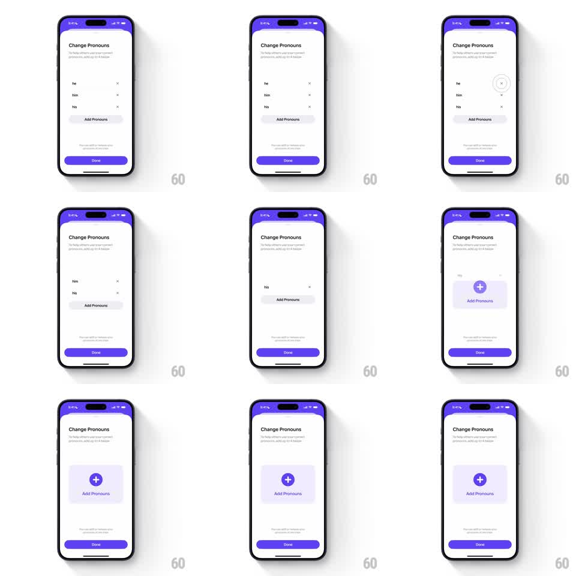

Media
Frame-by-frame

Rebuild this interaction 1:1: Honk's pronoun removal - tapping the x on a pronoun row scales it down and out with a spring, and removing the last pronoun morphs the list into an empty-state card with an Add Pronouns button.

Rebuild this interaction 1:1: Honk's pronoun removal - tapping the x on a pronoun row scales it down and out with a spring, and removing the last pronoun morphs the list into an empty-state card with an Add Pronouns button. ## Integration Integration: stack-agnostic spec - springs given as stiffness/damping, timed motions as duration + curve; map every value to your framework and animation library of choice. ## Scene "Change Pronouns" screen (purple header) with subcopy about others using your correct pronouns: rows "he", "him", "his", each with an x at the right, above an "Add Pronouns" button and a purple "Done" bar. Removing every pronoun leaves a light-purple empty card with a circled plus and "Add Pronouns". ## Motion spec Pattern: springy row scale-out with empty-state morph. - Tap a row's x: the row scales down (1 -> 0.8) and fades (200ms, ease-in) while collapsing its height (rows below slide up with spring ~380/26, 250ms). - Each removal is independent and interruptible - tapping several x's in a row staggers the collapses cleanly. - When the final row leaves: the "Add Pronouns" button morphs into the empty-state card - the pill expands into a large light-purple rounded card (corner radius + size over 300ms, spring ~300/22) and its label crossfades to the circled-plus-plus-text layout (200ms). - Re-adding a pronoun reverses: the card shrinks back to the pill and the new row scales in (0.8 -> 1, spring ~340/16). ## Calibration - The row's x gets a small press shrink (scale 0.85, 100ms) before the row animates out. - The empty state is a morph of the Add button, not a new element fading in - continuity is the charm. ## Reduced motion Rows crossfade out (200ms) with height collapse; the card swaps without the morph. ## Don't miss - Keep "Done" pinned at the bottom, untouched by the list animation. - Subcopy and header never move; only the list region animates.